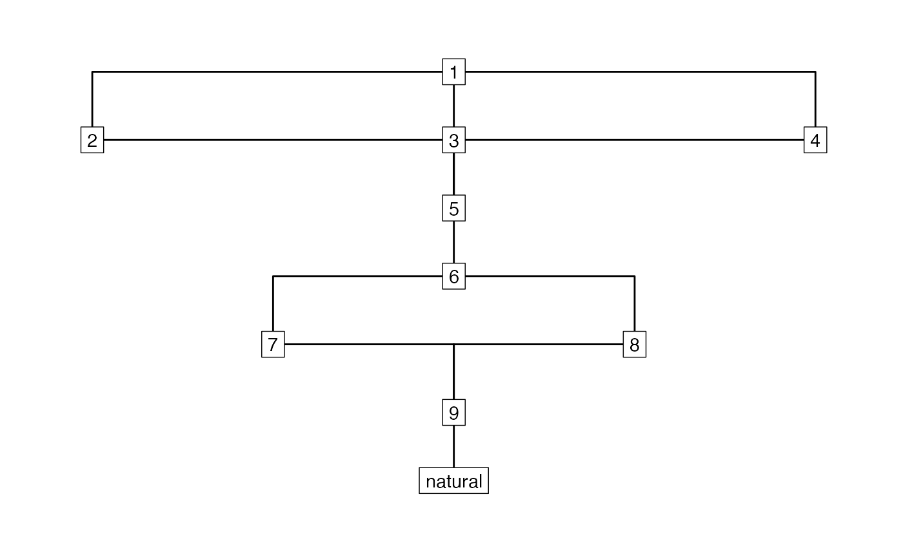

library("stratigraphr") library("tidygraph") #> #> Attaching package: 'tidygraph' #> The following object is masked from 'package:stats': #> #> filter library("ggraph") #> Loading required package: ggplot2 # Example data after Harris 1979, Fig. 12 data("harris12") h12_graph <- stratigraph(harris12, "context", "above", type = "harris") ggraph(h12_graph, layout = "sugiyama") + geom_edge_elbow() + geom_node_label(aes(label = context), label.r = unit(0, "mm")) + theme_graph()
